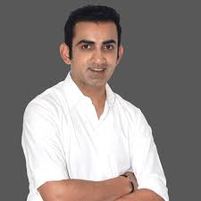

| SLNO |
NAME |
OCCUPATION |
IMAGE |
WIFE IMAGE |
DESCRIPTION |
| 1 |
VIRAT KOHLI |
CRICKETER |
 |
 |
Full Name. Virat Kohli ; Born. November 05, 1988, Delhi ; Age. 34y 260d ; Batting Style. Right hand Bat ; Bowling Style. Right arm Medium.
Date of birth: November 05, 1988 |
| 2 |
SHIKAR DHAWAN |
CRICKETER |
|
 |
Shikhar Dhawan (born 5 December 1985) is an Indian cricketer. A left-handed opening batsman, he captains Punjab Kings in the Indian Premier League and plays for Delhi in first-class cricket. At the 2013 Champions Trophy, 2015 World Cup, and 2017 Champions Trophy, Dhawan was the leading run-scorer for India.[4] He also became the first player in the history of IPL to score two back-to-back centuries.[5] He was awarded the 'Player of the Tournament' for his exploits in the 2013 ICC Champions Trophy, which he won with his national side. In the 2018 Asia Cup which Dhawan won with his national side, he was named Player Of The Tournament as he was the top scorer of the tournament with the bat. |
| 3 |
DHONI |
CRICKETER |
 |
|
Mahendra Singh Dhoni (listen); born 7 July 1981) is an Indian professional cricketer. He was captain of the Indian national team in limited-overs formats from 2007 to 2017 and in Test cricket from 2008 to 2014. Dhoni is widely considered one of the greatest cricket captains, wicket-keeper-batsman and finishers in the history of cricket.[a] He plays as a right-handed wicket-keeper-batsman and is known for his calm captaincy and his ability to finish matches in tight situations. He is also the current captain of Chennai Super Kings in the Indian Premier League. |
| 4 |
SACHIN TENDULKAR |
CRICKETER |
|
|
Sachin Ramesh Tendulkar, BR AO (listen); pronounced [sətɕin teːɳɖulkəɾ]; born 24 April 1973) is an Indian former international cricketer who captained the Indian national team. He is widely regarded as one of the greatest batsmen in the history of cricket.[4] He is the all-time highest run-scorer in both ODI and Test cricket with more than 18,000 runs and 15,000 runs, respectively.[5] He also holds the record for receiving the most man-of-the-match awards in international cricket.[6] Sachin was a Member of Parliament, Rajya Sabha by nomination from 2012 to 2018.[ |
| 5 |
YUVRAJ SINGH |
CRICKETER |
|
|
Yuvraj Singh (born 12 December 1981) is a former Indian international cricketer who played in all formats of the game. He is an all-rounder who batted left-handed in the middle order and bowled slow left-arm orthodox . He has won 7 Player of the Series awards in ODI cricket, which is joint 3rd highest by an Indian, shared with former Indian captain Sourav Ganguly. He is also the son of former Indian fast bowler and Punjabi actor Yograj Singh.[3] |
| 6 |
HARBHAJAN SINGH |
CRICKETER |
|
|
Harbhajan Singh[1][2] (born 3 July 1980) is a member of parliament in Rajya Sabha,[3] a retired [4] Indian cricketer and a cricket commentator. Harbhajan played for the Indian national cricket team from 1998 - 2016 in a career spanning nearly two decades. He was a right-arm off spin bowler. In Indian domestic cricket he played for Punjab cricket team, in IPL for Mumbai Indians, Chennai Super Kings and Kolkata Knight Riders franchise. He is considered to be one of the best spinners of his era. He was in the World Cup-winning team of both the 2007 T20 World Cup and the 2011 Cricket World Cup, along with the team that was one of the joint-winners of the 2002 ICC Champions Trophy, which was shared with Sri Lanka. |
| 7 |
ROHIT SHARMA |
CRICKETER |
 |
|
an apparently heartening term that has followed Rohit Sharma around like a shadow; even haunted him at times. It seems to be a burden that the cricketing fraternity has enforced upon him and, after more than a decade in the national setting, he has been weighed down by the label.Harsha Bhogle spoke of whispers in the domestic circuit; of coaches and scouts spotting the effortless, free-flowing stroke-play of a Mumbai teenager. Having cruised through first-class cricket, with an average well above 50, he shot to the limelight when he scored a brisk unbeaten triple-hundred at the Ranji level. |
| 8 |
K L RAHUL |
CRICKETER |
|
|
Kananur Lokesh Rahul (born 18 April 1992) is an Indian international cricketer who plays as a right-handed Wicketkeeper-Batsman for Karnataka at the domestic level and is the captain for Lucknow Super Giants in the Indian Premier League. He is a former vice-captain of the Indian Cricket Team.[1] He generally plays as an opener in Test and T20 game formats and plays in the middle order in the ODIs. Rahul is regular wicketkeeper in the shorter formats of the game at the international level as well at domestic level. He's also one of the more prominent members in leading the discussion around the theory of strike rates being overrated in T20s. |
| 9 |
RAVINDRA JADEJA |
CRICKETER |
 |
|
Ravindrasinh Anirudhsinh Jadeja (born 6 December 1988), commonly known as Ravindra Jadeja, is an Indian international cricketer who represents the Indian national cricket team in all formats. He is an all-rounder, who bats left-handed and bowls left-arm orthodox spin. He is regarded as one of the best all-rounders of the last decade, becoming, in 2021, the fifth Indian and fifth-fastest player to score 2,000 runs and take 200 wickets in Test cricket. Jadeja was the leading wicket-taker in the 2013 ICC Champions Trophy and received the man of the match award as a member of the final-winning team. He represents Saurashtra in first-class cricket and has captained the Chennai Super Kings in the Indian Premier League. |
| 10 |
GAUTHAM GAMBIR |
CRICKETER |
 |
|
Gautam Gambhir's cricketing career has all the trappings of a typical Bollywood flick- the glamour, the drama, the passion, the chutzpah, the wrangles, and of course the proverbial acche din and bure din. Gambhir's journey as a first-class cricketer began in the 1999-2000 season. But, it was a couple of years later, in 2002, that the Delhi lad first stole the spotlight. Then playing for the Board President's XI against a touring Zimbabwe team, the left-hander smashed a double century scoring 218 runs. A year later, came the big moment: Gambhir secured his place in the Indian team for the TVS Cup, a triangular fixture. |